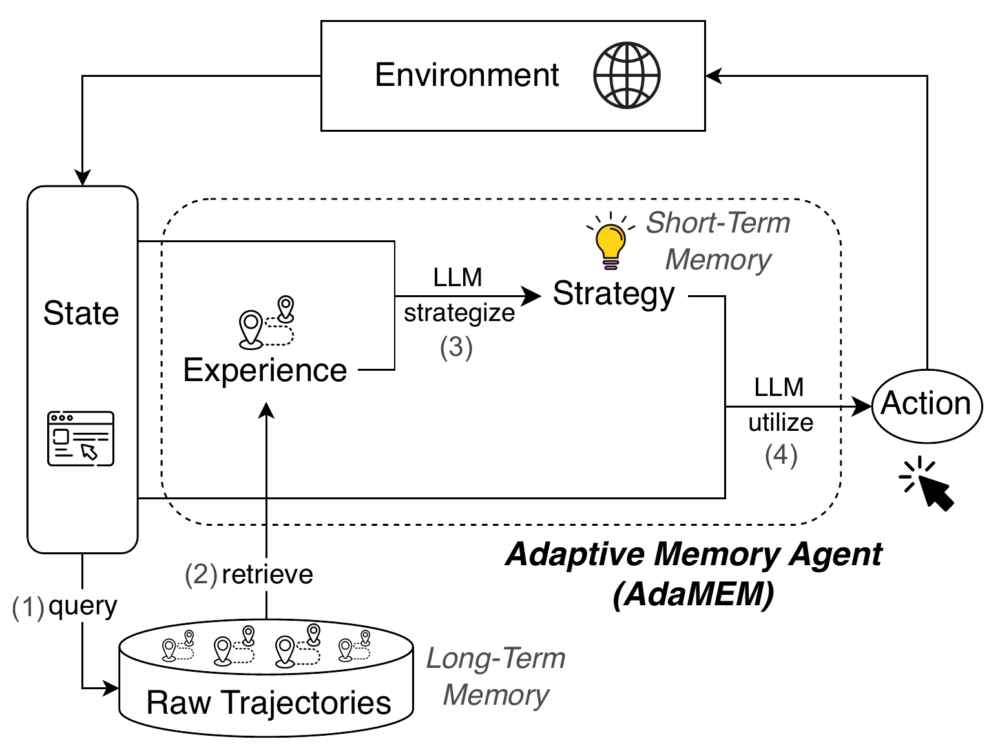
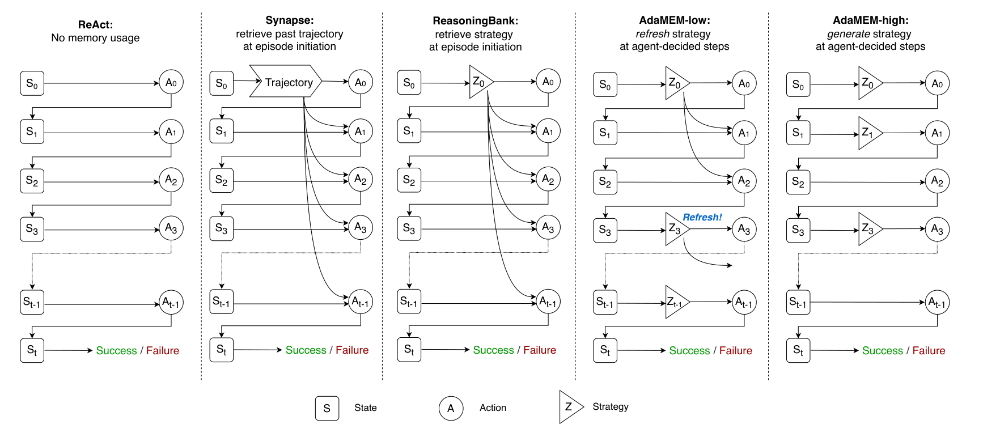
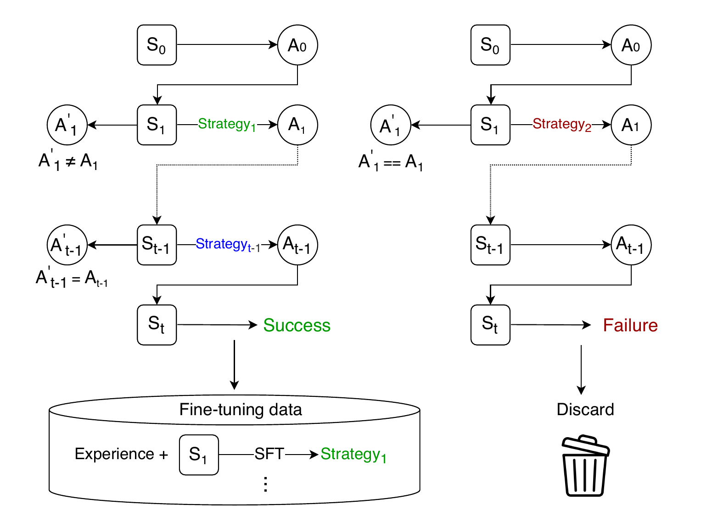

01研究背景与问题定义
任务开始时检索到的成功经验，可能在中途失败或子目标变化后失去指导作用。静态经验调用把指导固定在起点，多取几条示范也不能保证它们适合当前决策。AdaMEM 要解决的是经验保持不变，执行状态却持续变化的错位，让智能体在不在线更新参数的条件下调整行动策略。
核心创新：固定经验按当前状态重新生成策略
AdaMEM 将经验存储与策略生成分开：长期库保存离线成功轨迹，在线根据当前交互状态检索相关经历，再提炼为指导下一步行动的短期策略。过去的经历可以不变，当前的用法需要更新。这种适配发生在策略文字与动作选择上，不要求部署期间更新模型权重。
| 要解决的问题 | 设计选择及作用 |
|---|---|
| 初始经验跟不上中途变化 | 按当前状态调用经验，并生成适用于此刻的策略。 |
| 刷新策略需要额外推理 | HIGH 使用当前步临时策略，LOW 跨步保留、按需刷新，在适应性与开销之间取舍。 |
| 成功轨迹中的策略未必都有用 | Step-MFT 筛选策略介入后动作发生变化的成功步骤，用于训练策略合成能力。 |
Step-MFT 补充解决“怎样生成更有用的策略”：最终成功奖励会同时归功于有效诊断和冗余文字，动作变化提供了更细的筛选信号，但仍不是因果证明。整体上，论文改进的是已有经验的动态使用，长期经验库主要离线构建。
02方法与技术路线
AdaMEM 的执行路径是“当前状态检索经验 → 生成面向当前状态的策略 → 重新决定动作”。长期库提供具体成功经历，短期策略负责把经历解释成此刻可用的指导。HIGH 与 LOW 使用相同的检索和合成机制，区别在于生成的策略是否跨步骤保留；Step-MFT 则是独立的离线训练路径。
横向滑动查看全图
HIGH 与 LOW 共用同一条“判断—检索—合成—再决策”路径，区别在于旧策略是否跨步保留。
展开论文原图｜混合记忆架构与策略生命周期


Long-Term Trajectory Memory：检索到相似决策位置之后的成功过程
长期记忆在离线阶段构建，只纳入最终成功的轨迹。系统把轨迹中的每一个状态都作为索引入口：状态由当时完整交互历史表示，其向量作为检索键；对应内容包括该状态、随后的动作，以及直到成功的轨迹后缀。这样，当前问题可以匹配到历史任务的中途决策位置，不必总是从一整条示范的开头借鉴。
部署时，当前历史与观察组成状态 s，经过同一嵌入模型编码，再从索引中检索相关经历 E。相似度负责找候选，不能证明候选与当前环境的约束完全一致。后续的策略合成因此不可省略：模型需要判断这段经历中哪些关系适用，而不是照搬历史动作。原始经验库可以来自另一模型，当前策略仍由实际执行模型按当前处境生成。
展开实现参考｜检索索引怎样建立
附录 A 使用 Qwen3-Embedding-4B 的 2560 维输出，归一化后建立余弦空间的 HNSW 索引。每条索引对应成功轨迹中的一个状态，返回值保留该位置的动作及后续成功过程。索引负责查找经验，不负责决定本步是否值得检索。
Short-Term Strategy Memory：先合成指导，再生成真正执行的动作
策略 z 是一段简洁的自然语言指导，由当前状态 s 与检索经验 E 共同生成。随后，模型根据 s 与 z 再生成动作 a；这一步行动依据的是当前观察与经过适配的策略。相比将大量原始日志直接拼进动作提示，中间的策略层负责提炼对当前目标有用的行动顺序、约束或诊断。
每个环境步骤先产生一个暂定动作 a′，并同时输出是否需要检索或刷新的判断。若答案为“否”，a′ 就直接执行；若为“是”，系统先检索、合成策略，再在同一状态下重新生成动作 a。刷新发生在动作执行之前，a′ 不会先在环境里试一遍。检索决策来自模型及其提示，论文没有把它定义成由相似度或错误次数决定的硬阈值。
HIGH 与 LOW：控制策略什么时候失效
| 环节 | AdaMEM-HIGH | AdaMEM-LOW |
|---|---|---|
| 步骤开始 | 根据当前状态提出 a′，判断是否检索 | 结合当前状态与已有 z_curr 提出 a′，判断是否刷新 |
| 不触发 | 执行 a′，本步不生成新策略 | 执行 a′，继续保留原有策略 |
| 触发 | 检索、合成临时 z，再生成 a | 检索、合成新 z，替换 z_curr，再生成 a |
| 动作执行之后 | 本步策略不向后保留 | 策略持续进入后续步骤，直到再次刷新 |
HIGH 减少对旧指导的依赖，但下次需要经验时必须重新合成；LOW 把一次生成的成本分摊到多个动作，也更依赖模型识别策略已经过时。LOW 在回合开始时将持久策略初始化为空。两种模式都可能在某步不检索，不能把 HIGH 理解成每步强制刷新；论文另用 MAX 表示每步都刷新的消融配置。
动作提交给环境后，新的观察加入交互历史，成为下一步检索与策略判断的依据。这个反馈更新的是当前状态与短期指导，长期轨迹库不会在该循环中自动吸收部署期间的新经历。
展开示例｜刷新策略不会先执行旧动作
机制示例，依据论文流程构造，非实验轨迹。
当前处境：已有策略建议继续搜索某类容器，但多次观察显示没有进展。模型在旧策略下暂定继续搜索，同时判断需要刷新。
发生刷新：系统暂停暂定动作，检索相似状态的成功后缀，生成新的搜索方向，然后在当前状态重新选择动作并执行。
下一步：HIGH 丢弃本次策略；LOW 保留它，直到状态变化再次触发刷新。
Step-MFT：筛出策略改变了决策的成功步骤
训练希望学到的能力是“从当前状态与经验中合成有帮助的策略”。直接把成功回合中的全部策略当成好样本，会奖励许多没有影响动作的冗余文字；而真实估计每条策略是否提高成功概率，又需要额外环境分支或价值评估。Step-MFT 使用动作变化作低成本代理，先运行 HIGH 收集数据，再结合回合结果筛选。
横向滑动查看全图
数据保留当前状态、检索经验、策略、暂定动作、实际动作与最终奖励。筛选同时要求最终成功，且加入策略前后的动作字符串不完全相同。留下的监督样本以“状态＋检索经验”为输入，以策略文本 z* 为目标，通过交叉熵提高模型生成这些策略的概率。训练目标是策略生成，a′ 只参与筛选；部署时同一个微调模型仍同时承担策略和动作生成。
训练目标：提高 πθ(z* | s, E) 的对数概率
r 是回合最终成功信号；a′ 是策略介入前的暂定动作，a 是实际执行动作。筛选不需要额外执行 a′ 的环境分支。
这个代理信号强调“策略至少改变了当前决策”，但没有直接测量策略优势。原文关于必要性的推导依赖贪心决策等假设；实践中按动作字符串比较，还可能把措辞差异当成行为变化。因此成功且动作改变只能作为筛样依据，不能证明该策略比未执行的 a′ 更优。
展开论文原图｜Step-MFT 双重筛选

03实验设计与结果分析
动态策略是否在不同底座上有用
主结果使用 LOW，报告三次运行均值与标准差。ALFWorld 是 unseen 成功率，WebShop 是 Task Score（0–100），并非成功率。Qwen 在两任务的底座分别为 Qwen3-4B-Instruct-2507 与经过 RL 训练的 Qwen2.5-7B-Instruct；Gemma 两列同为 Gemma-3-27b-it。每个任务内比较保持底座一致，不把更昂贵的 MAX 结果混入结论。
| 底座 / 记忆设置 | ALFWorld unseen 成功率 % | WebShop Task Score 0–100 |
|---|---|---|
| Qwen / 无记忆 | 46.8 ± 2.5 | 71.4 ± 1.4 |
| Qwen / Synapse | 52.2 ± 0.7 | 65.4 ± 0.9 |
| Qwen / AdaMEM | 58.2 ± 3.9 | 74.2 ± 0.3 |
| Gemma / 无记忆 | 37.6 ± 1.9 | 18.2 ± 0.1 |
| Gemma / AdaMEM | 49.5 ± 2.6 | 24.7 ± 1.2 |
两类底座都受益，说明收益不只来自某一个模型原本擅长模仿示范。Qwen 在 WebShop 上直接接入静态记忆反而低于无记忆，AdaMEM 则回到更高水平，这与“经验必须先适配当前决策”的动机一致。但完整系统同时改变检索位置和策略表示，主表不能把收益全部归给某一个环节。
策略抽象与原始经验分别提供什么
MAX 下的消融固定 ALFWorld seen 设置，额外揭示能力与输入成本之间的关系。此处 token 为论文报告的每步用量，不能当作 LOW 的实际预算。
| 配置 | 成功率 % | 每步 token |
|---|---|---|
| 完整 AdaMEM | 65.5 ± 3.2 | 6.0K |
| 无策略抽象 | 59.3 ± 5.0 | 3.8K |
| 无长期轨迹 | 34.8 ± 2.7 | 3.9K |
| 两者都无 / 无记忆 | 45.2 ± 1.8 | 2.1K |
原始经验被拿掉后，额外生成“策略”并没有自动变好，甚至弱于无记忆；这说明策略写作本身不是有效知识的替代物。完整方法高于直接使用经验的版本，但每步用量也更高，因此抽象既带来适配能力，也消耗推理预算。这个实验支持两者的互补性，尚未建立相同总算力下的最优调度。
04贡献、局限与综合评价
可迁移的贡献：经验调用需要一个策略层
AdaMEM 最值得学习的是经验、策略和动作的分工。长期库保存相对稳定的具体经历，短期策略负责当前任务的解释，动作负责实际环境执行。这样，测试时适应无需等同于权重更新，记忆的作用也不局限于向提示中添加几条相似文本。
HIGH/LOW 把策略生命周期显式化，是这一分工的重要延伸：系统不仅要问“检索什么”，还要判断“现有指导何时失效”。主实验与策略消融说明该系统在所测任务中有价值，但尚不能证明模型的检索决策已接近最优。若用匹配 token 预算的固定刷新或外部状态变化规则比较，可以进一步区分智能调度与额外计算的贡献。
两项条件决定证据可以外推多远
首先，Step-MFT 的成功筛选把全局结果传给局部策略，仍有信用分配噪声。只比较字符串变化，会奖励无关措辞差异，也可能漏掉策略对长期规划的帮助。更有区分力的验证是在少量可重放状态中真实执行 a 与 a′，检查过滤器对局部收益的预测是否可靠，再判断微调的提升来自更好策略还是成功风格的模仿。
其次，测试时生成了新策略，并不意味着系统持续积累了新经验。经验池主要来自离线成功轨迹，遇到陌生工具或相似状态下不同的隐藏约束时，最近邻可能系统性失配。当前机制能重新解释已知经验，不能保证从部署后的失败中更新经验覆盖。因而这项工作建立的是动态使用记忆的有效性；持续学习还需要解决经验准入、冲突和失效检测，不能由“测试时适应”的名称直接推出。